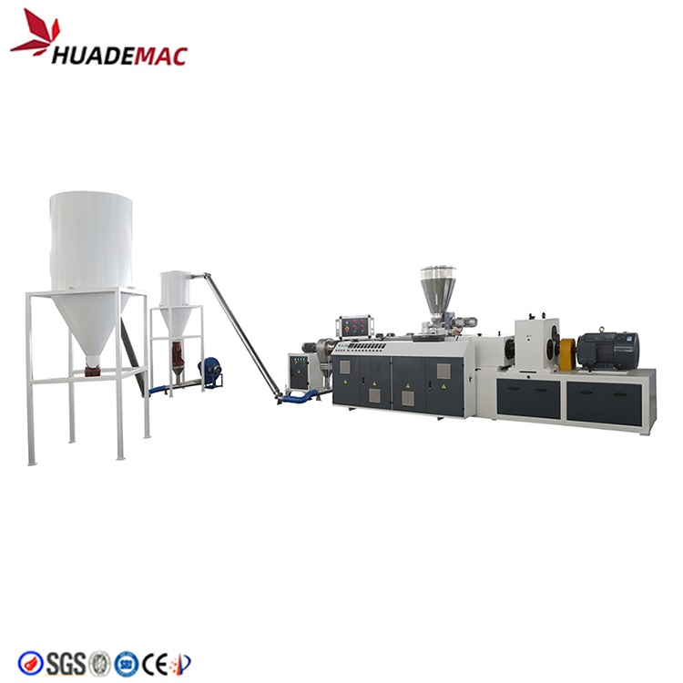
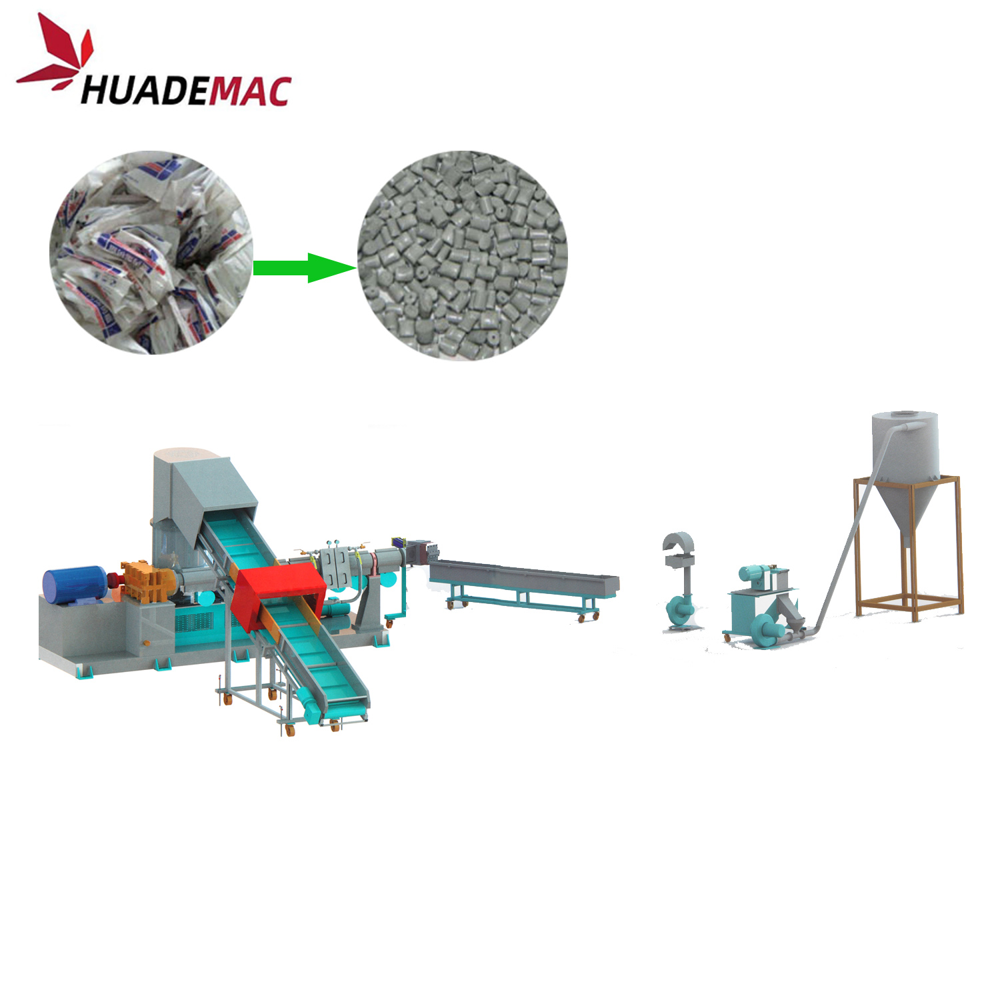

PE PP Compactor Type Pelletizing Machine
Compact waste PE or PP film and woven bags before extrusion and pelletizing.
Inquire about this product Prepare a detailed project brief
Equipment overview
Belt Conveyor As standard design, plastic scraps such as film, filament, raffias conveyed into the compacting room through belt conveyor; to handle rolls’ scraps, roll hauling off device is an optional feeding method. Motor drives of conveyor belt and hauling device cooperate with ABB inverter. Feeding speed of conveyor belt or roll hauling off is fully automatic based on how full the compactor’s room is. Metal detector can be combined with belt conveyor, and can interlock with control system, to warn and stop the system, in case that metal is found in feeding.
Compactor / Agglomerator The rotatory blades of compactor will cut up incoming scraps. Frictional heating which caused by high speed rotatory blades will heat and let scraps shrinking just below their agglomerating point. Optimal designed guide structure compacts the material and directs it into extruder screw. Crushes, dries and compacts the material which enables a fast and stable feeding from the compactor directly into the extruder.
Extruder A specialized single screw extruder applied to gently melt the pre-compacted material. The plastic scraps will be well melted, plasticized in a 36D processing section. With double-zone vacuum degassing system, volatiles such as low molecular and moisture will be removed efficiency, especially suitable to heavy printed film and material with water content
Noodle Cutter Strand Type Cutting System The length of the sink is 4 meters, which can be adjusted up and down, and the stainless steel pipe is designed to change water. The sink is made of 2mm thick stainless steel plate.
Vibration drying system Advanced dewatering vibration sieve combing with horizontal-type centrifugal dewatering present high performance dried pellets and lower energy consumption.Combine crushing, compacting and plletizing steps in one system, less-labor cost.Higher efficiency feeding, suitable to film, filament, raffia, foaming materials;Higher output and lower energy consumption
Technical specifications
Reference configurations from the product catalogue. Confirm output, dimensions and equipment selection for your material and project.
| Extruder model | Compactor Power(kw) | Extruder Power(kw) | Capacity(kg/hr) |
|---|---|---|---|
| SJ85 | 37 | 55 | 180-250 |
| SJ100 | 55 | 90 | 250-300 |
| SJ120 | 75 | 110 | 300-400 |
| SJ130 | 90 | 132 | 400-500 |
| SJ150 | 90 | 160 | 500-600 |
| SJ160 | 110 | 185 | 600-700 |
| SJ180 | 160 | 250 | 800-1000 |
Detailed Images
Application
Applicable plastic materials: PE, HDPE, LDPE, LLDPE, etc
Material shapes: film, bag, non woven fabric, (PE, PP) regrind
Material types: (rolls, loose, bundled),
Material comes from offcut, industry defective film and washed film
Equipment video
Ask about this machine
PE PP Compactor Type Pelletizing Machine